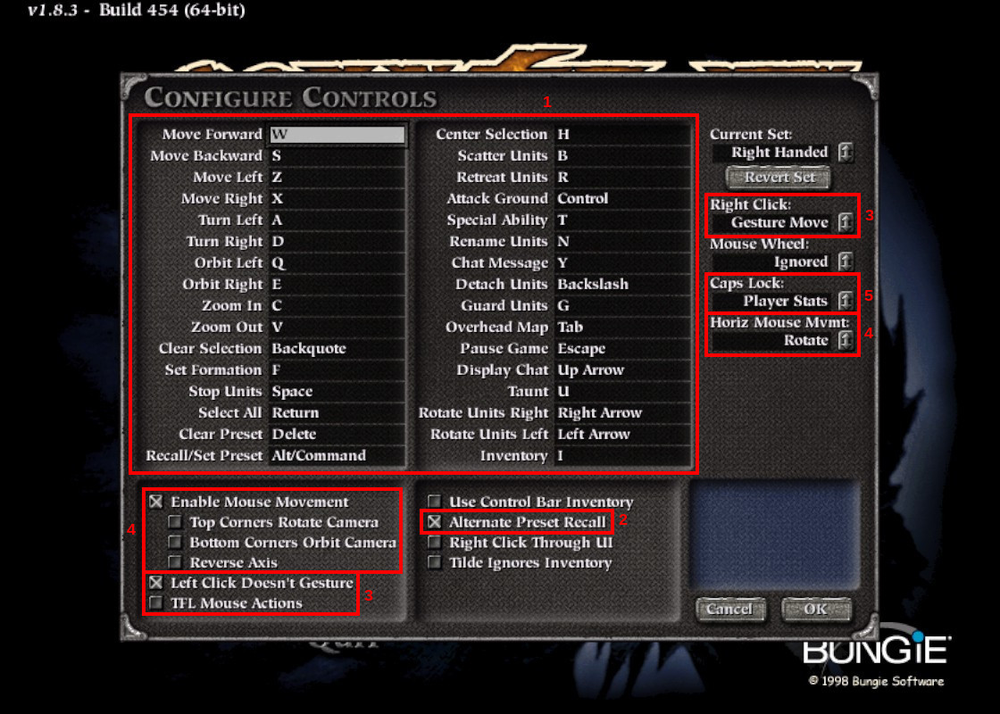

Controls¶
Open the Controls customization from the Preferences menu. The image below marks some things of note:
The MythDeck config assumes that you are using the default keybindings for the default “Right Handed” controls set. Out of the box the keybindings you see should match those in box 1 above. If not, you can try selecting “Right Handed” (at the top right of the window) and clicking “Revert Set” to reset them to defaults.
As mentioned before and shown in box 2, you must enable “Alternate Preset Recall” for the MythDeck configuration to work best (and for the description in these docs to be accurate).
The two boxes marked 3 show some configuration that maybe isn’t strictly necessary but is strongly recommended. By setting these configurations for left and right click, you can use one Deck trigger strictly for unit selection and targetting and the other trigger strictly for unit moving and facing. Otherwise you might get into situations where e.g. you’re trying to band-select a bunch of units but it thinks you are trying to set some unit’s facing, or other badness.
If you’re a Myth veteran that has your own strong preferences about what mouseclicks do, feel free to do what you want there, but this is what has worked for me with this configuration. These docs will assume this setup for left and right clicks.
The two boxes marked 4 are getting more into pure preference. These have to do with what happens when you run the mouse cursor into the sides or corners of the screen. These are the settings I use, which allow you to pan the view by hitting the top/bottom of the screen and turn the view by hitting the left or right edge. All up to what feels good to you. If you don’t keep these settings in mind you might get into situations where the view is moving or spinning and you don’t know why (… it’s because your cursor is on some edge/corner).
Finally, the option at 5 controls the behavior of right-stick-click in the MythDeck config, which you can use to toggle some info display on or off. I choose to use it to control the display of some player stats but you can pick something else here.
That’s it for Myth configuration! Now it’s time to talk about the MythDeck config itself.